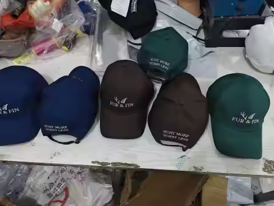

Heated vests
Price to be announced
FUR & FIN / THE FIRST COLLECTION
From early starts to the everyday.
Discover Fur & Fin heated vests and caps.

The everyday collectionNavy · Brown · Dark greenTHE COLLECTION
4 products
Heated vests
Price to be announced
Caps · Navy
Price to be announced
Caps · Brown
Price to be announced
Caps · Dark Green
Price to be announced
Caps shown in navy, brown and dark green. The heated vest illustration is a design concept. Prices and launch details will be announced.
ROOTED IN THE OUTDOORS
The Fur & Fin story starts outside.
This is the next chapter.